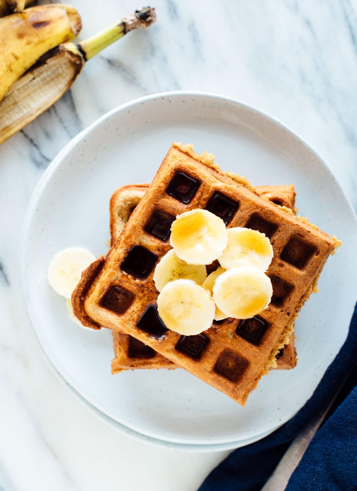

Back
Banana Oat Waffles
Ingredients
- 2 1/4 cups oat flour
- 3 tablespoons packed brown sugar
- 2 tablespoons arrowroot starch or cornstarch
- 1 tablespoon baking powder
- 1/2 teaspoon salt
- 1/2 teaspoon cinnamon
- 3 large eggs
- 1 cup milk of choice
- 7 1/2 tablespoons butter, melted
- 3/4 cup mashed ripe bananas (about 2 medium)
- 2 teaspoons vanilla extract

Instructions
- In a large mixing bowl, combine the oat flour, sugar, starch, baking powder, salt and cinnamon. Whisk to combine.
- In a medium mixing bowl, whisk the eggs. Then add the milk, butter, mashed banana and vanilla extract. Whisk until the mixture is thoroughly blended.
- Pour the liquid mixture into the dry mixture. Stir with a big spoon until combined (the batter will still have a few lumps). Let the batter rest for 10 minutes so the oat flour has time to soak up some of the moisture. Plug in your waffle iron to preheat now (if your iron has a heat setting, set it to medium-dark).
- Once 10 minutes is up, give the batter one more, gentle swirl with your spoon. The batter will be pretty thick, but don’t worry! Using a measuring cup, pour batter onto the heated waffle iron, enough to cover the center and most of the central surface area, and close the lid.
- Wait to check on the waffles until most of the steam has stopped billowing out the sides (this takes 5 to 6 minutes in my waffle maker). Once the waffle is deeply golden and crisp, transfer it to a cooling rack or baking sheet. Don’t stack your waffles on top of each other, or they’ll lose crispness.
- If desired, keep your waffles warm by placing them in a 200 degree oven until you’re ready to serve. Repeat with remaining batter and serve with desired toppings.
Source